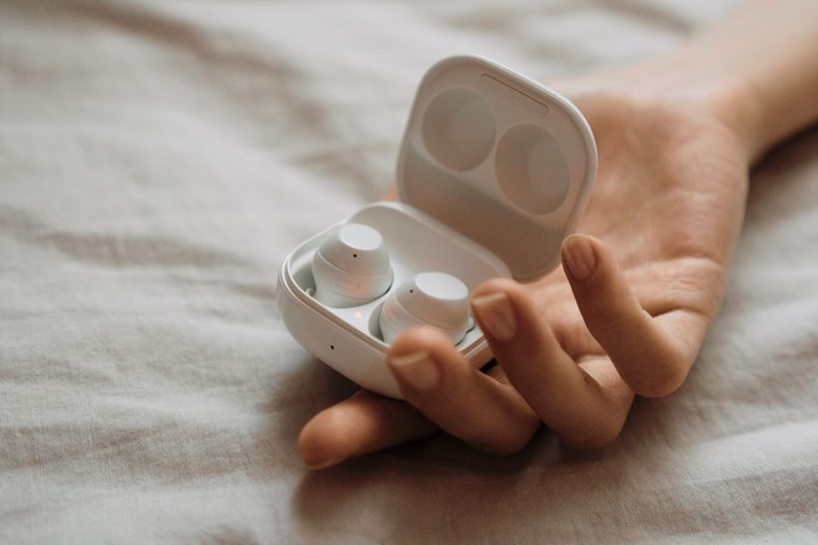

Los mejores auriculares inalámbricos en calidad-precio
Es la categoría con más ruido de marketing de toda la electrónica de consumo. Fichas llenas de cifras que suenan técnicas y no significan nada, mientras el dato que de verdad va a decidir si los usas a diario no aparece por ninguna parte.
Vamos con lo que importa, en orden.
Resumen rápido
| Modelo | Mejor para | |
|---|---|---|
| Sony WF-1000XM5 | La mejor cancelación de ruido | Ver en Amazon |
| Apple AirPods Pro | Si tienes iPhone | Ver en Amazon |
| Anker Soundcore con cancelación | Lo más razonable por su precio | Ver en Amazon |
Los mejores en calidad-precio
La mejor cancelación de ruido
Sony WF-1000XM5
A favor
- La cancelación de referencia en auriculares de botón
- Multipunto: móvil y ordenador a la vez
- Aplicación con ecualizador que sí sirve para algo
En contra
- Caros
- El estuche no es de los más pequeños
Si vuelas, viajas en tren o trabajas rodeado de ruido y no quieres pensarlo más, son estos. Para todo lo demás hay opciones más sensatas.
¿Te lo estás pensando? Añádelo al carrito en Amazon y decídelo con calma: te avisan si baja de precio y lo tienes a mano cuando te decidas.
No ponemos precios porque cambian cada día. Lo ves actualizado al entrar.

Si tienes iPhone
Apple AirPods Pro
A favor
- Se emparejan solos y saltan entre iPhone, iPad y Mac sin tocar nada
- El modo transparencia es el mejor del mercado
- Cancelación muy buena
En contra
- Con Android pierden casi todo lo que los hace especiales
- La almohadilla de silicona no le encaja a todo el mundo
Con iPhone, la integración vale lo que cuesta. Con Android, no los compres: pagas por funciones que no vas a tener.
¿Te lo estás pensando? Añádelo al carrito en Amazon y decídelo con calma: te avisan si baja de precio y lo tienes a mano cuando te decidas.
No ponemos precios porque cambian cada día. Lo ves actualizado al entrar.
Lo más razonable por su precio
Anker Soundcore con cancelación
A favor
- Cancelación decente por una fracción de lo que cuestan los de arriba
- Batería larga
- Aplicación completa
En contra
- La cancelación no llega al nivel de Sony o Apple
- El acabado se nota más plástico
El punto donde la relación calidad-precio es más alta de toda la categoría. Si es tu primer par con cancelación, empieza aquí antes de gastar el triple.
¿Te lo estás pensando? Añádelo al carrito en Amazon y decídelo con calma: te avisan si baja de precio y lo tienes a mano cuando te decidas.
No ponemos precios porque cambian cada día. Lo ves actualizado al entrar.